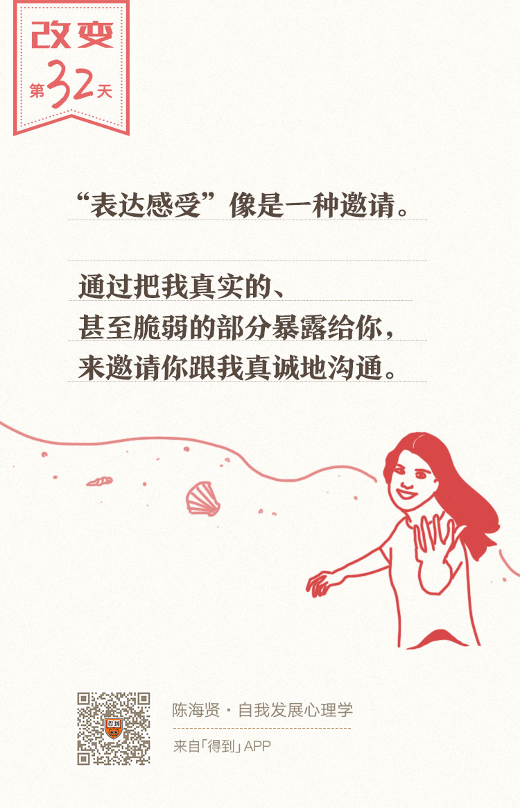

32丨非暴力沟通：怎样进行高质量的对话？

欢迎来到《自我发展心理学》。
你好，我是陈海贤。
上节课的结尾，我留了一道思考题：既然分不清什么是你的事，什么是我的事，是人际关系最主要的烦恼来源，那我们是不是彼此远离，老死不相往来就好了？
如果是这样，那人和人之间的关系就会变得越来越冷漠，你也会越来越孤独。
课题分离所倡导的，不是把人与人分开的孤立主义。人总是需要相互支持、相互合作的。
那么，把自己的课题和别人的课题分开，会妨碍我们合作吗？
其实恰恰相反，不仅不会妨碍合作，还会促进合作。这就是这一讲我要讲的——非暴力沟通。
解决纷争的“非暴力沟通”
前段时间，我看到一个新闻，讲一对情侣在结婚之前争论房子要不要加女方的名字。
事情是这样的，男生的爸妈婚前付首付给男生买了一套房，现在两人要结婚，男生并不是很想加女生的名字。然后女生就说，好，她也不是非要加她的名字。但是她也要提出她的要求：
“第一，我们两个人的生活开销我只出50%，你还完房贷有钱没钱不关我的事情，我不会借钱给你，因为我不好意思让你还。
“第二，如果父母要一起住，我没有义务照顾他们，我还有自己的父母要照顾。
“第三，所有琐碎的事情两人分担，我不是你请的保姆，没有这个义务。”
你看，这算课题分离吗？这算“你的事是你的事，我的事是我的事”吗？
我觉得不是。如果这算课题分离，这并不会解决他们的矛盾，而会让他们的矛盾加深。
这对情侣的沟通其实反映了我们在日常生活中经常有的沟通模式：如果我们在沟通中觉得委屈了，我们不会向对方表达这种委屈，或者提我们的需要，而是“以牙还牙”，以报复性的方式让对方同样感受到不舒服。
这样的沟通方式，很难有合作的基础。
为了解决这种沟通难题，马歇尔·卢森堡博士（Dr.Marshall Rosenberg）发明了一种特别的沟通方式，叫“非暴力沟通”，专门用来解决人们在沟通中的矛盾和冲突。
这种沟通方式不仅被运用到日常的沟通，甚至还被运用到解决国际纷争这样的外交领域。据说，马歇尔博士本人还因为这套沟通方法获得过诺贝尔和平奖的提名。
为什么这样的沟通方式能够促进人们的相互合作呢？答案可能出乎意料。
它的原则其实就是上节课我们讲的课题分离，也就是把自己的事情和别人的事情分开。
“非暴力沟通”的四要素
那么，什么叫“非暴力沟通”呢？
非暴力沟通的模式其实不难理解，只有四个要素：观察、感受、需要、请求。
听起来像是老生常谈是不是？可是这四个要素里，有很深刻的道理在，我来分别讲一讲。
第一个要素，是观察。
观察强调的是，把我的观察和我的评论分开。
举几个例子：
比如，你看到你爱人又在淘宝上买了一堆东西。也许你会说：“你太浪费钱了。”
可是，“浪费钱”就是一个评论，不是一个观察。
如果按照非暴力沟通的模式，你应该说：“我看到你又买了很多的东西，我觉得你太浪费钱了。”这样，就把观察和评论分开了。
再比如，同事在工作中犯了一个错误，你可能会说：“他根本不行。”这是一个评价。你应该说：“他又犯了错误，这已经是这个月第三次了。”
怎么样，这样的说法是不是有些别扭？
这是因为，我们习惯的方式，是用评价来表达意见的。评价并不是事实，而是我们在加工事实的基础上所形成的意见。
可是，我们很容易把它当做是一个事实，并要求别人也接受。
在评价所塑造的关系中，评价者和被评价者的关系是不对等的。评价者总是高高在上的。
所以，当你跟伴侣说：“你太浪费钱了。”的时候，你其实也是在说：“我有权力评价你，你需要接受我的意见。”
也许对方自然就会反抗：“我哪里浪费了？都是我们需要的东西啊！”
也许她反抗的，不是评价这件事本身，而是在评价背后的关系。
所以强调观察，就是强调把“我的意见”和事实分开。
我观察到的事实，就是我们都能共享的东西。事实里并没有我的意见在，也就不会有评价所造成的不对等的关系，自然就更有利于沟通了。
我再来强调一下：
第二个要素，是表达感受。
就是说，要表达我的情绪和感觉，而不是我的想法。
比如，“你在房产证上不加我的名字，我觉得不公平”，“不公平”是想法还是感受呢？是想法。
同时，不公平也是一种评价性的想法，对方很容易会把它当做批评。
如果要表达感受，也许你可以说：“你在房产证上不加我的名字，我觉得很沮丧，或者很委屈。”
如果有一个人跟你说，我很委屈，你的第一反应，肯定不是去批评他，而是去了解他，安慰他。这就是为什么我们要表达自己的感受。
这同样跟我们日常的做法不同。只有在最放松的时候，在我们最亲近的人面前，我们才会表达自己的感受。
假如我跟人说，我很委屈，而别人笑着说，你委屈关我什么事，我一定会深受伤害。这就是表达感受难的地方，也正是表达感受最有力的地方。
它像是一种邀请，通过把我真实的，甚至脆弱的部分暴露给你，邀请你来跟我真诚地理解和沟通。
可是，什么是造成我们感受的根源呢？
我们很容易觉得，对方是我们感受的根源。是对方没有满足我们的愿望，让我们这么沮丧或者委屈。如果是这样，那你还是没有把自己的事情和他人的事情分开。
事实上，我们自己才是我们感受的根源，我们需要为自己的感受负责。
让别人为我们的感受负责，和我们自己为自己的感受负责，表现在沟通上，就会有很大的差异。
如果是前一种，在表达的时候，我们自然就会说：
“你没在房产证上写我的名字，我很失望。”当我们这样说的时候，我们是说，我的失望是你引起的，因为你没写我的名字，所以我很失望。
可是，如果你是那个为自己感受负责的人，也许你的说法就变成了：
“你没在房产证上写我的名字，我很失望，因为我很想和你有更紧密的联系。”或者说：“因为我很想减少婚后可能的矛盾和猜忌。”
这么说和前面的说法有什么区别呢？
她其实是在说，她很失望，但不是因为“你没在房产证上写我的名字”这个行为本身，而是因为她的需要没有得到满足。
在这样的表达中，我们把自己的需要和他人的行为分开，从而承担起了关系中，我们对自己行为和感受的责任。
这两种不同的表达，在沟通中的意义是不同的。
你的行为引起我的感受，所以如果我感觉不好，那么“都是你的错”。而我的需要和期待没有得到满足，这就没有了指责的味道。
相反，我把自己放到了一个需要安慰的位置，而对方也更可能从他的防御姿态中解脱出来，来理解和安慰我们。
所以，通过在表达感受的时候，把“我的感受”和“你的行为”分开，我们就避免了“都是你的错”的思维误区，从而促进了合作的沟通。
第三个要素，就是直接说我们的需要。
我们总是容易以批评的方式来提出我们的主张，而不是直接说我们的需要。
越是对自己的需要不确信，我们越容易在提出需要之前，用长篇大论来说明我所提的需要是合理的。这时候，我们很容易陷入一种自我辩护的立场。
比如，你和同事一起配合做一项工作。你工作了很长时间，觉得累了。你可以跟他说：“我很累了，能不能来帮帮我？”而不是说：“我都干了一天活了，都这么累了，你就不能帮帮我吗？”
因为后一种表达，其实已经是一种指责了。
这时候同事可能就会说：“干这么点活也叫累，我上次连续干了两星期，是怎么做的？”
为什么我们会以自我辩护的方式提出需要呢？
当我们这样做的时候，我们聚焦的重点不再是自己的需要，而是对方的反应。我们在想的，是怎么说服他，而不是表达自己的需要。
可是你要知道，如果你假设他是需要说服的，你同时也假设了他并不情愿来帮助你。在这样的假设里，你已经把他放到了你的对立面。他拒绝帮你，也许拒绝的不是你的需要，而是你提需要背后的指责。
提需要的要点，是把自己的需要和对对方的期待分开，只专注于自己的需要，而不要去想对方会怎么回应。这样，反而能促进彼此的合作。
第四个要素，是提出请求。
请求，就是清楚地告诉对方，我们希望他们做什么。但是，请求不是命令。
就像我们在课题分离中所说的，提出请求是我们自己的事情，而别人是否答应，这是别人的事情。
可是，如果我们提出请求的时候，给人的感觉是：如果他不答应我们的请求，就会受到惩罚。那我们提出的就不是请求，而是命令。
而别人对待命令的方式，通常只是服从或者反抗，而不是出自本心的帮助。
还是回到前面那个情侣的例子。
这个女士是很生气的，当她提出一二三四的时候，她到底是在请求还是在命令呢？
我想，还是命令居多的。可以设想一下，当那个男生不答应，也许她就会说：那我们就分手吧”。
但是，如果她是以一种请求的方式提出，她可能会说：“能在房产证上加我的名字吗？因为我很需要”也许男生会更容易考虑她的请求。
好，回顾一下这一讲的内容。
这一讲我们主要讲了非暴力沟通的四个要素。
通过这样的沟通方式，我们既能分清楚什么是我的事，什么是你的事，同时还能促进彼此的合作。我们都要为自己的感受负责，这没错。可这并不妨碍我伸出手来，邀请你来走近我、理解我、帮助我，如果你愿意。
下一讲，是关系这一章的最后一节，我想谈谈建立新关系的必走之路。
我们下一讲见。
